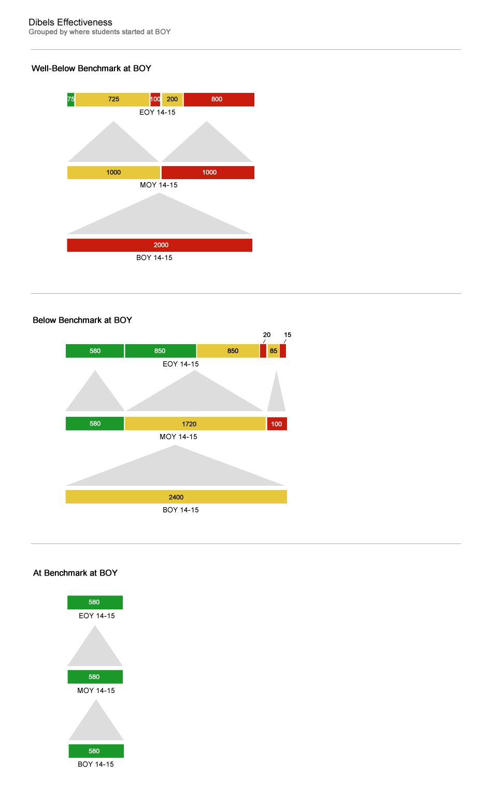
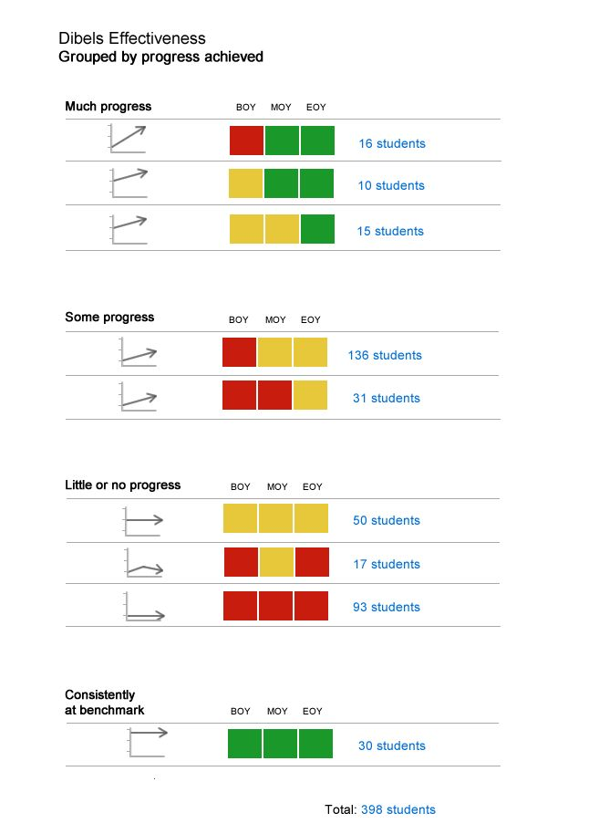
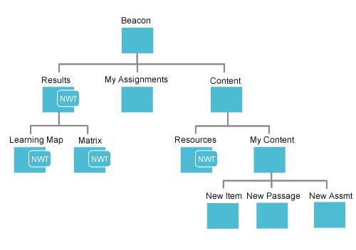
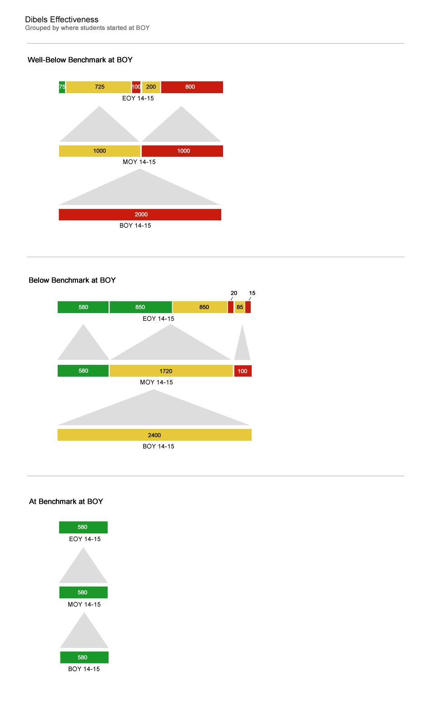
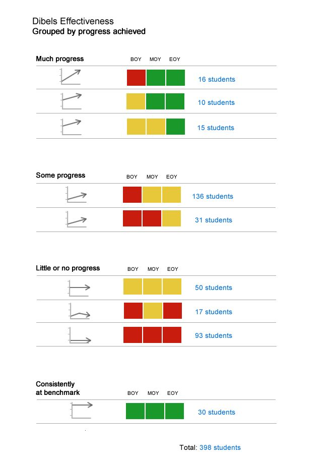
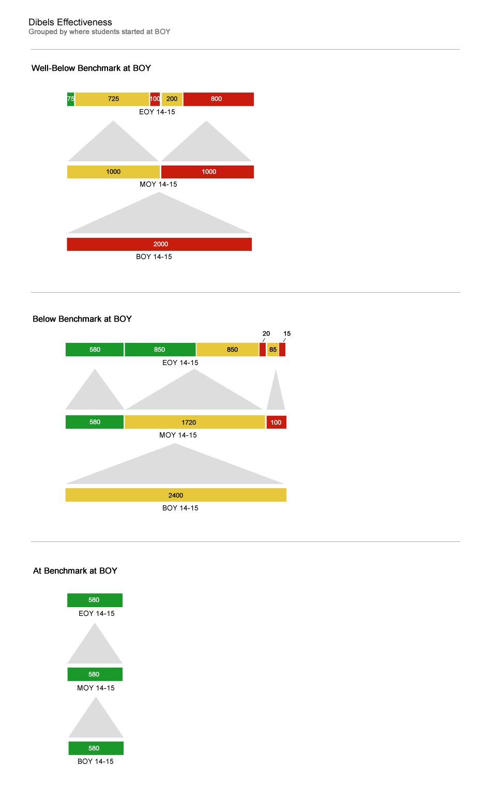
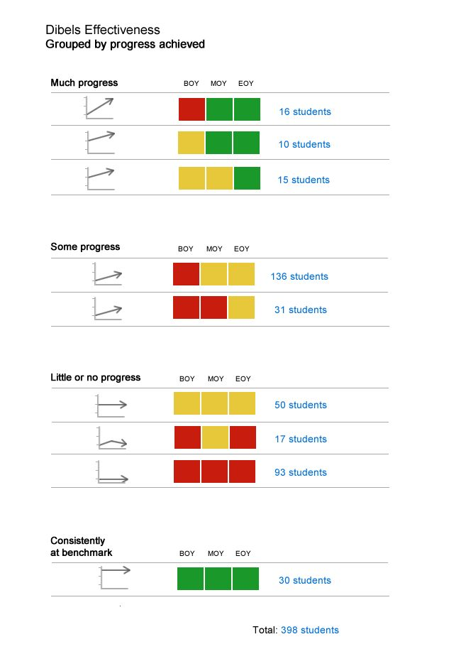

This chart about student test results over time is hard to understand.
After
There are many better ways to represent the data.


The Winner
The winning design best showed changes in population size over time.
Information Architecture
Before
This website has an overly-complicated information architecture.
After
The new information architecture is easier to navigate and doesn't lose any functionality.

User Research
Interactive Customer Directory
This interactive customer directory was intended for the product development team but it quickly became popular with sales and marketing teams.
Sprint Story Graphics
These graphics represent the the product development's sprint stories through the perspective of our customers.
User research repository
All research data in a shared, searchable Evernote account. Tags and notebooks make data as easy to find as it is to add.
Page Flows
Mobile app
Page flow for a section of a mobile app.
PDF Reports
Before & After
The old report (left) wasted space and did not sort rows in a meaningful way. The new report (right) is more organized, compact, and incorporates the company's branding.
Wireframes
Desktop
Wireframes for two states of a web page.
Mobile
Annotated wireframes leave little room for confusion in the hands of developers.
Prototypes
Before
This modal has a confusing layout and an outdated look.
After
New prototype lays the elements in the order the user will interact with them. Created in HTML/CSS/Javascript.
{kind=link}
{kind=link}
 



{kind=link}
{kind=link}


{kind=link}
{kind=link}